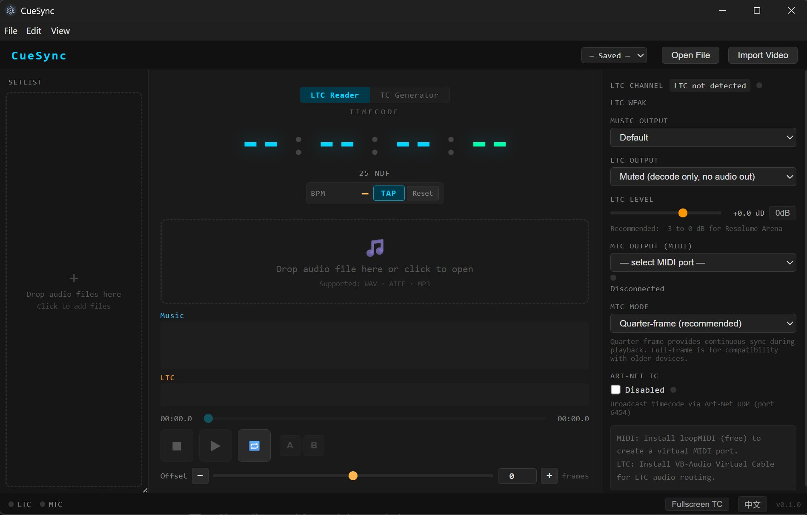

Sync your show with precision timecode. LTCast reads and generates LTC, triggers MIDI cues, and sends MTC, MIDI Clock, Art-Net, and OSC — all from one app.
14-day free trial of all Pro features — no credit card required.

LTCast is the only tool that simultaneously outputs LTC, MTC, MIDI Clock, Art-Net, and OSC — no dongles, no rack, no chain of brittle apps.
Auto-detects LTC channel and frame rate from any audio file. Drop-frame 29.97 plus non-drop 24 / 25 / 30 fps. Generate LTC for tracks that don't have it.
Quarter-frame and full-frame MIDI Timecode. Chained-timestamp scheduling over Web MIDI removes JS jitter — locks DAWs and QLab cleanly.
Send 0xF8 clock at any BPM. Drive drum machines, Ableton, Traktor, and hardware synths from your show's master tempo.
UDP OpTimeCode packets for grandMA, ChamSys, Avolites and any Art-Net 4 console. Configurable broadcast or unicast.
Per-cue templates for Resolume, Disguise (d3), and WATCHOUT. Send arbitrary OSC messages at any timecode.
Pre-Show Check, Panic button, Show Log (CSV), Setlist auto-advance, Remote Display, and a Bitfocus Companion module for Stream Deck control.
Most shows end up chaining three or four apps: a DAW for LTC, a separate MIDI Clock sender, a timecode-to-Art-Net bridge, and a cue list. LTCast replaces that stack.
| Capability | LTCast | QLab (macOS only) | Reaper / DAW + plugins | Hardware (Rosendahl / Mutec) |
|---|---|---|---|---|
| Windows & macOS | Both | macOS only | Both | N/A |
| LTC reader + generator | Built-in | Limited | Plugins | Yes |
| MTC + MIDI Clock + Art-Net + OSC simultaneously | Yes | Partial (needs workarounds) | Multiple plugins | LTC/MTC only |
| Setlist with auto-advance + GO workflow | Yes | Yes | Manual | — |
| Stream Deck / Companion control | Official module | Yes | Community | — |
| Price | $49 / year | $99 – $999 (one-time) | $225 + plugins | $600 – $2500 |
Comparison reflects publicly listed features at time of writing. Product trademarks belong to their respective owners.
14-day free trial of all Pro features. No credit card. Cancel any time — your files stay yours.
Single event or one-off gig.
Working pros and regular shows.
Rental houses, AV teams, education.
QLab is a fantastic show-control app, but it's macOS only and focused on cueing. LTCast runs on Windows and macOS, is built specifically around timecode generation, and sends LTC, MTC, MIDI Clock, Art-Net, and OSC simultaneously out of the box. Many users run both — LTCast as the timecode master, QLab for cue playback.
Yes. Windows 10 or later (NSIS installer) and macOS 12 or later (universal DMG, Intel + Apple Silicon). The same project file works on both.
Yes — 14 days of all Pro features, no credit card. Free tier keeps LTC reading, generation, dual waveform, A-B loop, tap BPM, and video import indefinitely.
For LTC output, you need a virtual audio cable (VB-CABLE on Windows, BlackHole on macOS) — both free. For MTC / MIDI Clock, use a virtual MIDI port (loopMIDI on Windows, built-in IAC Driver on macOS). Art-Net and OSC are just network.
LTCast runs completely offline after activation. A Pro license has a 30-day offline grace period — perfect for venues without stable internet. It silently re-validates in the background every few hours when a connection is available.
Yes. Email xypro.ai@gmail.com with a short description of what you do — students, community theatres, and non-profit productions get a free or deeply discounted license.
Yes. There's an official Bitfocus Companion module in the companion/
directory of the repo. It talks to LTCast over a local WebSocket. OSC Input (play,
pause, next, select song) is also supported.
Source is public under Commons Clause + MIT — read it, audit it, build it from source, fork it. The Commons Clause prevents third parties from repackaging and reselling LTCast itself. The binary we ship is freemium: basic features are free forever, Pro is $49/year (or $15 for a 7-day pass).
Download LTCast, load a track, and you're sending LTC, MTC, MIDI Clock, Art-Net, and OSC in under two minutes.